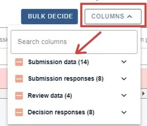
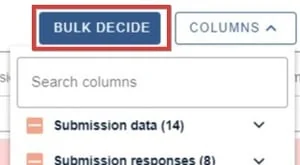
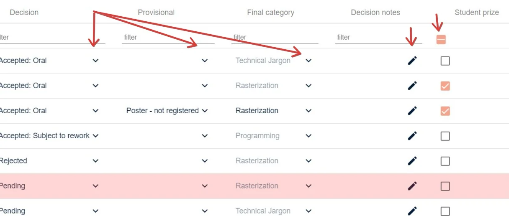

The decisions table
For event organisersNot an organiser?
The decisions table gives an overview of submissions data relating to outcome status and is used for making decisions on submissions.#
NB. To become familiar with the decisions table layout and tools, see An overview of tables.
Go to How to email submitters from tables.
Navigate to Event dashboard Abstract Management → Decisions → Table
Navigate to the Columns section of the table in the top right corner.

The options will appear grouped into submission data, and submission responses, review dataand decision responses.
NB: The decision responses group will be the group that are editable - ie where you enter your decision, determined by the decision form.
Bulk decide will enable you to make bulk decisions on submissions. See Recording a decision (accepting/ rejecting/ withdrawing a submission)

All the fields to the right hand of the table are editable, and denoted by editing icons (dropdown, checkbox or pencil icon). These can be edited by those who have access (administrators and committee members). The fields in this area are determined by the questions in the decision form.


Did this page solve it?
Thanks — this helps us fix it.
Didn't solve it? Ask our support team
No question is too small, and there's no charge for asking. Raise a ticket and someone who knows the software will pick it up.